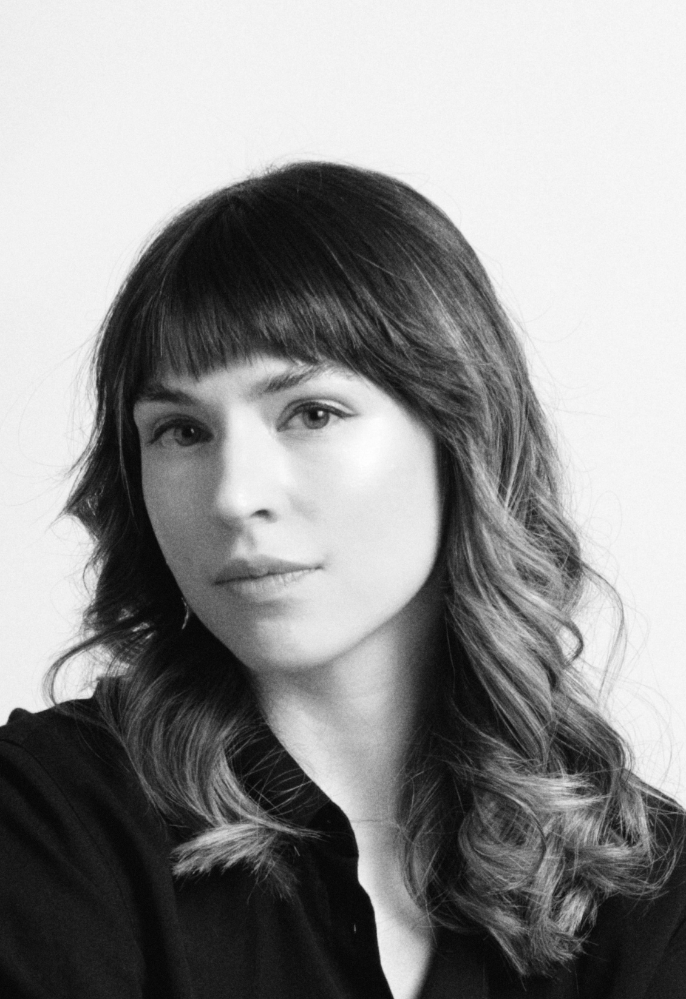

About
I am a sociocultural, media, and linguistic anthropologist and visual artist.My research explores the politics of form: how creative media practices can unsettle the communicative infrastructures that sustain narrow visions of social and political life.
In my dissertation, Unsettling Forms: Animation, Alienation, and Violence in Berlin, I theorize animation as a mode of relation that not only imbues figures with the appearance of life but displaces and amplifies energies across spatial and temporal gaps. Through ethnography with Berlin-based animation artists, I show how these practitioners animate fragments of language, images, and gestures in ways that reconfigure who can be seen and heard, and on what terms. I am developing this research into a book, Slippery Figures: Animating the Violence of Relation in Berlin and (not) Berlin, which centers on the potential violence that stirs in forms and norms of relationality.
My current research project, "Syn(aes)thetic Memory," examines how artists and activists in Germany are using emergent media practices to reanimate memories of displacement in the context of Germany's highly institutionalized yet increasingly fraught memory culture.
From September 2026, I will hold a SSHRC Postdoctoral Fellowship at the University of Alberta in Edmonton, Canada. I am currently a postdoctoral fellow at the Freie Universität Berlin, supported by the Berlin Program for Advanced German and European Studies and the Wenner-Gren Foundation.